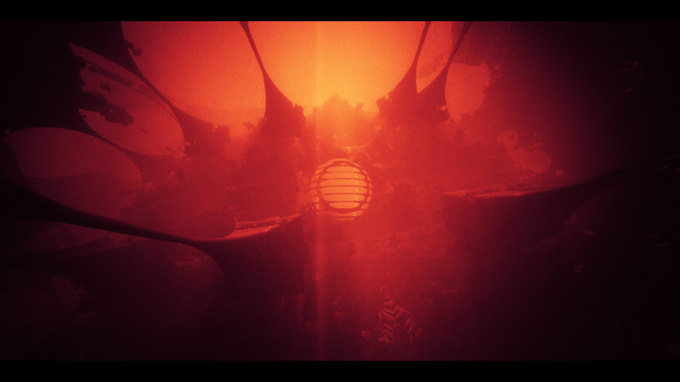

20150718 - Stochastic 1 Sample/Pixel Lit Fog stills
Found a the old stochastic 1 sample/pixel lit fog. Left the post process grain on, it is smoother in practice. This could be an algorithm which only looks good in this demo, never really tried adjustments on other content...
{kind=link}

{kind=link}
{kind=link}
{kind=link}

General idea is to stochastically select a z value/pixel between the eye and the opaque backing z value based on the volume of material in between. In this demo I just used a very large sphere of volumetric stuff behind the center sphere. Each {z} point is shaded and "lit" (fake in the demo), and also has some opacity value. Then there is a separate spatial+temporal filter process which attempts to remove the noise from the extremely sparse volume sampling, and also correctly manage un-occlusions, etc. The volume is treated separately from the opaque layer and blended together before the final temporal noise reduction pass (scene is traced). The demo was running at 120Hz, and didn't ever look right at 60Hz. These temporal techniques are all about visual masking of artifacts in motion, so they tent to be highly tuned just to the point of perceptual artifacts at a given target frame rate. The one takeaway from this little project, was so weight samples in the filter based on similarity of their backing opaque z value to center backing opaque z value. This tends to maintain an even gradient based on objects which are at a similar distance from the eye. Which is what one would expect in general for fog volumes.
Something I didn't try but would help here is to decouple volume density sampling (aka alpha value) from shaded color. Run alpha computation at a higher sampling rate, then mix together later...
Algorithm
Runs a spatial filter on {color,alpha} with 13 taps in the following pattern,
. . . . . . . . .
. . x . . . x . .
. . . . x . . . .
. . x . . . x . .
x . . . x . . . x
. . x . . . x . .
. . . . x . . . .
. . x . . . x . .
. . . . . . . . .
Pixel weights are "gaussian * f(sampleOpaqueBackingZ,centerOpaqueBackingZ)", where f(s,c) decreases weight as opaque z-buffer value becomes non-matching (filter intent is that fog tends to have similar effect when the opaque backing is at a similar distance away),
r = min(c,s)/max(c,s);
return (r*r)*(r*r);
Runs a second spatial filter with 13 taps in the following pattern,
. . . . . . . . .
. . . . . . . . .
. . . . x . . . .
. . . x x x . . .
. . x x x x x . .
. . . x x x . . .
. . . . x . . . .
. . . . . . . . .
. . . . . . . . .
Pixel weights are "gaussian * f(sampleOpaqueBackingZ,centerOpaqueBackingZ)", where f(s,c) does something similar,
r = 1.0/(1.0+abs(c-s)/min(s,c));
Cannot remember why these two spatial filter passes have different z based weighting functions. Turns out the temporal filter has another depth weighting function. They both have some fixes for when depths are zero which I didn't bother to copy in. The temporal filter reprojects 5 points in a packed + pattern. Want to use reprojected Z (project reprojected backing Z into the current frame). Does a neighborhood clamp, then has reprojection weights based on "gaussian * f(sampleOpaqueBackingZ,centerOpaqueBackingZ)", where f(s,c) does something similar but with a depth bias,
r = 1.0/(1.0+abs(c-s)/c);